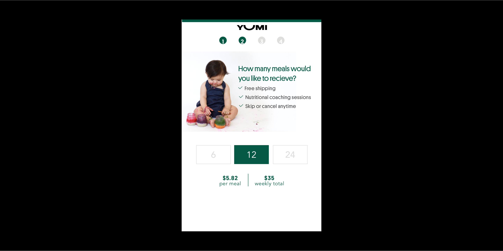
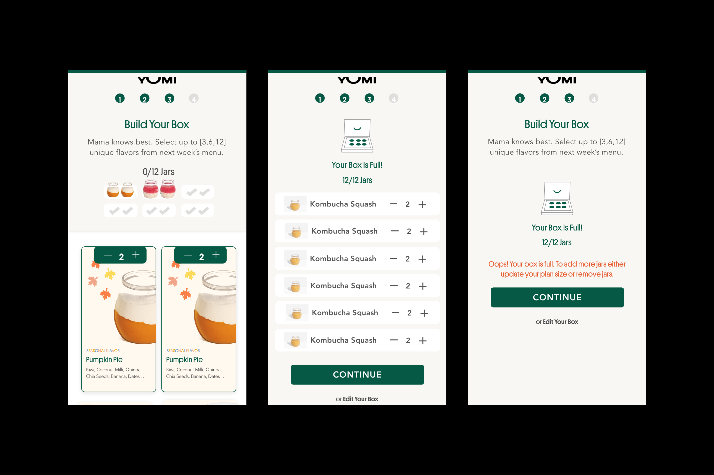
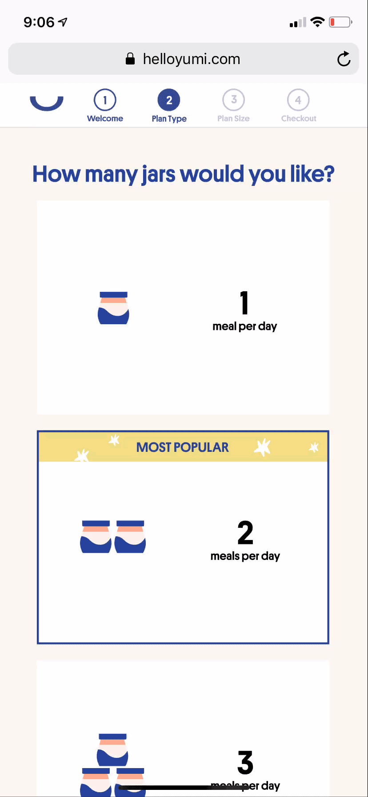
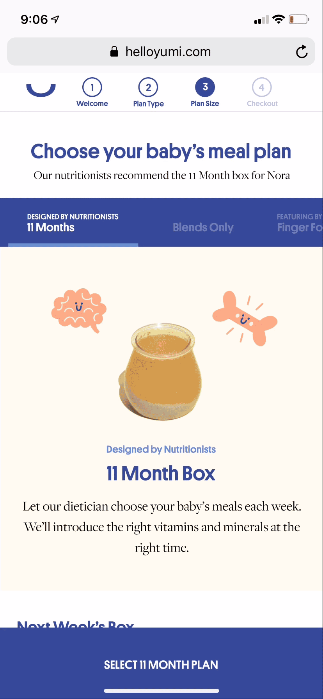
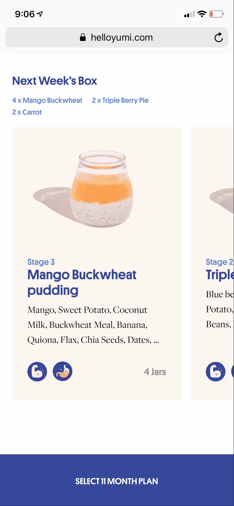
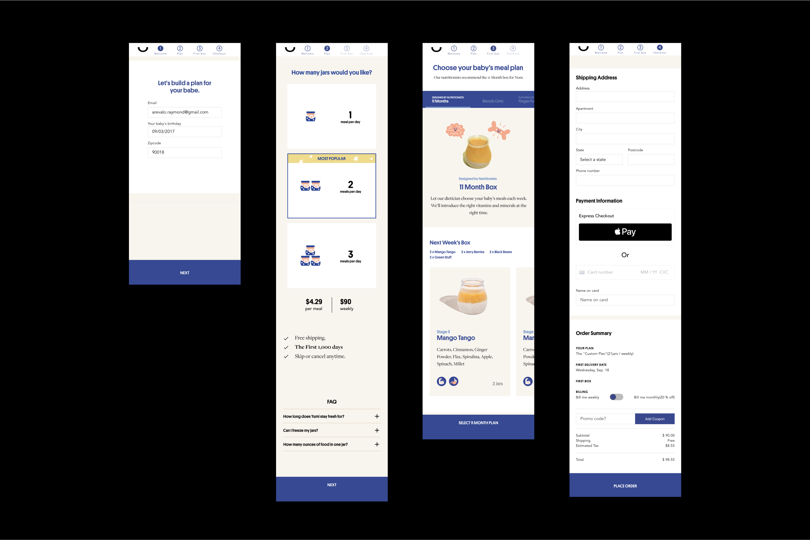
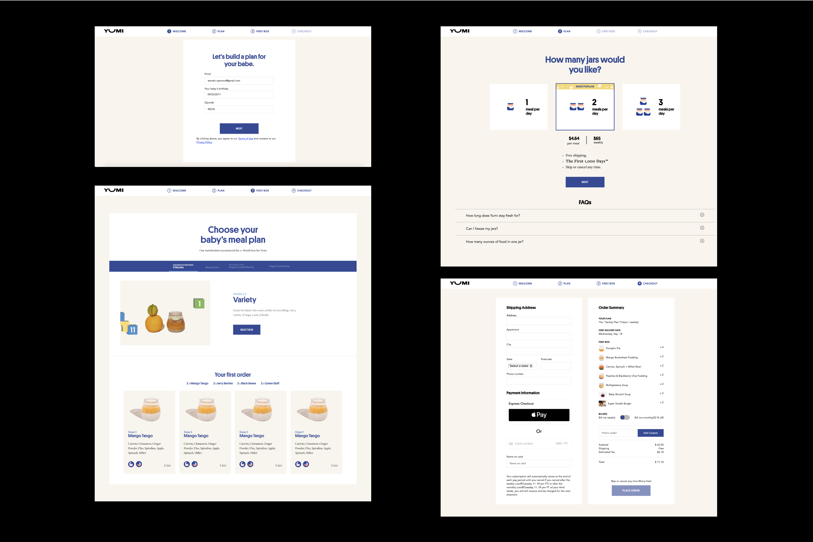

case study
Checkout
Designed a faster checkout experience.
Company: Yumi
Role: Product Designer / Web Developer
Timeline: Dec 2018 - Jan 2019, Apr 2019 - May 2019
project link Read More 
At the core of Yumi's checkout is a delightful experience that balances product education with a speedy checkout. Users select the quantity and type of baby food they'll like to receive on a weekly basis.
Challenges
When redesigning checkout, our first major challenge was providing subscription sizes that worked for the user. In previous iterations, we allowed customers to choose a subscription size of 6, 12, or 24 jars. However, this model provided too much or too little food for our customers.

Our second major challenge was speeding up our food selection process. In previous iterations, we allowed customers to browse and add individual jars to their cart. Choosing from 18 flavors proved to be taxing on the user.

Solutions
To guide the user towards a plan size that worked for them, we aligned our plan sizes around a breakfast, lunch, and dinner mental model and changed our offerings to 1 a day, 2 a day, and 3 a day – 7, 14, 21 jars. Changing our subscription plan sizes not only made it easier to conceptualize the offering, but also changed the perception of the business from selling food to selling a service. A service that would be easily understood in societies that are based off of a breakfast, lunch, and dinner routine.
To visually help users understand our offerings, we made plan size selection dynamic. We replaced a static image with dynamic jars that changed depending on the plan size selected.

The first step in speeding up our food selection process was to get rid of customization in checkout and instead rely heavily on prebuilt plan types, which increased the conversion rate.
Unable to disclose data due to private matters.
The second step was providing an intuitive way of viewing the user's first shipment of Yumi. Through user observation, we were able to identify an area of delay coming from users going back and forth between step 3 and 4 of checkout to see their plan type and first shipment. Our solution was to merge the components into one step. With a few prototype iterations we were able to optimize screen usage. We stepped away from a 2 column, multi row experience of viewing menu items, to a single horizontal scrollable row.


Outcome
By harnessing the power of mental models and limiting choices, we were able to provide an experience that was quick and easy to use. The final product allowed users to pick a plan size of "1 a day, 2 a day, and 3 a day" and a selection of prebuilt plan types. With both of these decisions leading to higher conversion rates, I can say I have left an impact on how Yumi markets their subscription services.
Working on Yumi's checkout was my first experience of dealing with the hard reality of being a designer at an early-stage, fast-growing startup. It gave me opportunities to learn more about product design, branding, and front-end development. Most importantly, it gave me opportunities to develop fundamental soft skills such as: adapting to the different roles required of me, learning how to effectively collaborate with developers and managers, and curiosity with the unknown.

Mobile Prototype